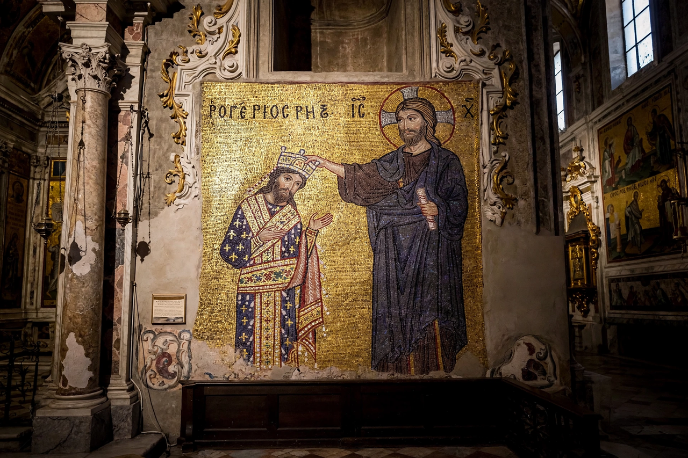

From Wikipedia, the free encyclopedia
| Roger II of Sicily | |
|---|---|
| Reign | 1130–1154 (King of Sicily); Count of Sicily from 1105 |
| Born | 22 December 1095, Mileto, Calabria |
| Died | 26 February 1154, Palermo |
| House | Hauteville |
| Father | Roger I of Sicily |
Roger II (Italian: Ruggero II, Sicilian: Ruggeru II; 22 December 1095 – 26 February 1154), sometimes called Roger the Great, was King of Sicily and Africa, son of Roger I of Sicily and successor to his brother Simon. He began as Count of Sicily in 1105 and became Duke of Apulia and Calabria in 1127, then the first King of Sicily in 1130. By the time of his death at the age of 58, Roger had succeeded in uniting all the Norman possessions in southern Italy into one kingdom with a strong centralised government.

Roger succeeded his father as a minor under the regency of his mother, Adelaide del Vasto. In 1127 he claimed Apulia on the death of Duke William II, and in 1130 — backed by the antipope Anacletus II — he was crowned king in Palermo Cathedral on Christmas Day.
Roger faced revolts on the mainland and two invasions, but by 1139 had secured recognition from Pope Innocent II by the Treaty of Mignano. He built the most powerful navy in the Mediterranean, annexed the coast of Ifriqiya (modern Tunisia) in the 1140s to form a short-lived "Kingdom of Africa", and in 1147 attacked the Byzantine Empire, sacking Corinth and Thebes and carrying off their silk weavers to Palermo.
Roger's multilingual court patronised scholars of Latin, Greek and Arabic learning. He commissioned from the Arab geographer Muhammad al-Idrisi the famous world geography known as the Tabula Rogeriana (1154), and himself inspired the great mosaic programmes of Cefalù, Monreale's predecessor churches and the Palatine Chapel. The chronicler Hugo Falcandus later called his court "a baptised sultan in the midst of Christendom".
Roger died at Palermo on 26 February 1154 and was buried in Palermo Cathedral in a porphyry sarcophagus. He was succeeded by his son William I.
See also: Kingdom of Sicily, Robert Guiscard.